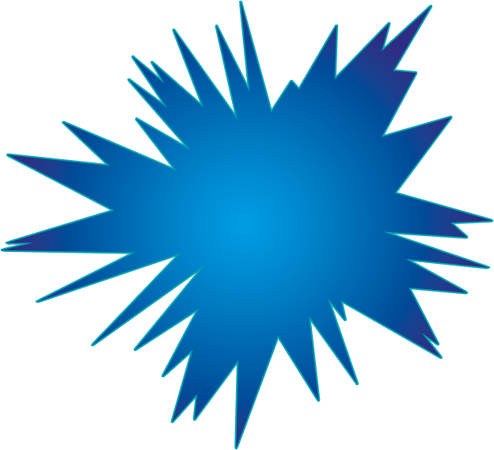
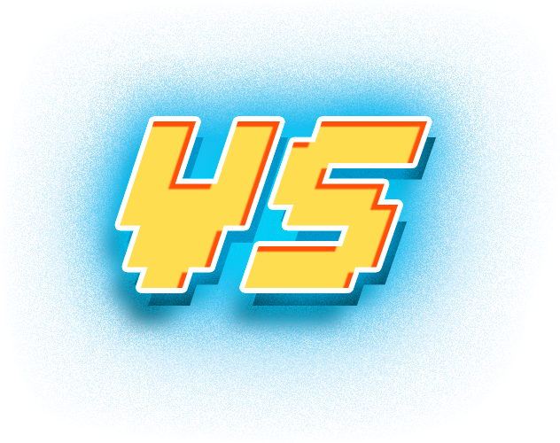

<link rel="import" href="../../components/polymer/polymer.html">
<link rel="stylesheet" type="text/css" href="../../components/csshake/dist/csshake.css">

<dom-module id="anaevent-versus">
	<style type="text/css">

		:host {
			font-family: 'rcade';
			color: white;
		}

		@font-face {
			font-family: 'rcade';
			src: url('font/Thixel.ttf');
		}

		.absolutepos {
			position: absolute;
		}

		.etoile {
		    left: 656px;
		    position: absolute;
		    top: 345px;
		    -webkit-animation:spin 10s linear infinite;
		}

		@-webkit-keyframes spin { 100% { -webkit-transform: rotate(360deg); } }

		.vs {
		    left: 665px;
		    position: absolute;
		    top: 396px;
		}

		.tagLeft {
		    left: 90px;
		}

		.tagRight {
		    left: 1373px;
		}

		.tag {
			position: absolute;
		    opacity: 1;
		   	text-align: center;
		   	font-size: 50pt;
		    width: 462px;
		    top: 70px;
		}

	</style>
	<template>
		<div class="tag tagLeft"></div>
		<div class="tag tagRight"></div>
		<div class="rcade">
			
			
		</div>
	</template>
	<script src="anaevent-versus.js"></script>
</dom-module>

